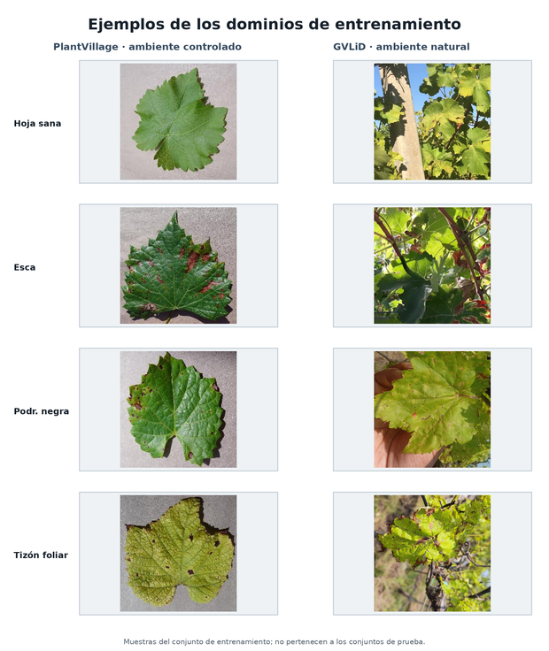
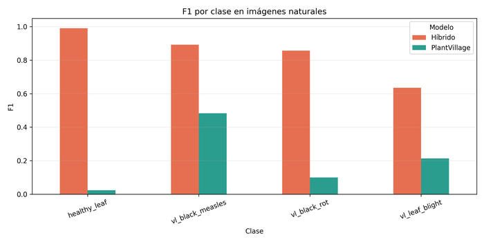
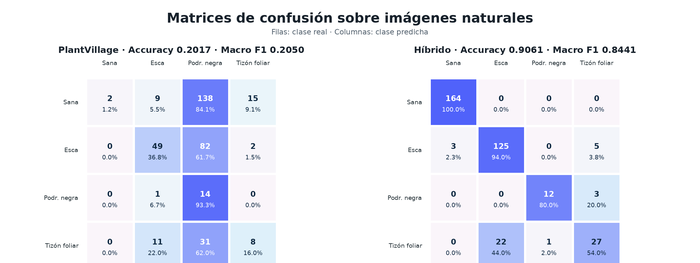

El objetivo fue comprobar si la incorporación de fotografías naturales al entrenamiento mejora la capacidad de una red neuronal convolucional para clasificar enfermedades foliares de la vid fuera de las condiciones controladas de PlantVillage. Se compararon dos modelos ResNet50: una línea base entrenada exclusivamente con PlantVillage y un modelo entrenado con un conjunto híbrido. Ambos reconocen las mismas cuatro categorías y fueron evaluados sobre exactamente los mismos conjuntos de prueba.
El dominio controlado se obtuvo de PlantVillage. Para el dominio natural se utilizó GVLiD: GrapeVine Leaf identification of the Diseases, versión 5. Se conservaron exclusivamente las categorías con una correspondencia semántica entre ambas fuentes.
| Etiqueta natural GVLiD | Etiqueta normalizada | Nombre utilizado |
|---|---|---|
| healthy | healthy_leaf | Hoja sana |
| esca | vl_black_measles | Esca o sarampión negro |
| Black rot | vl_black_rot | Podredumbre negra |
| leaf blight | vl_leaf_blight | Tizón foliar |
Antes de dividir GVLiD se calcularon hashes SHA-256. Se eliminaron 1.066 duplicados exactos y dos contenidos que aparecían con etiquetas contradictorias. Quedaron 2.407 fotografías naturales utilizables. La división por clase se realizó de forma determinista en 70 % para entrenamiento, 15 % para validación y 15 % para prueba, con semilla 42. El procedimiento evita que una copia exacta aparezca simultáneamente en entrenamiento y prueba.
| Clase | Originales | Únicas utilizables | Train natural | Val natural | Test natural |
|---|---|---|---|---|---|
| Hoja sana | 1.109 | 1.093 | 765 | 164 | 164 |
| Esca | 888 | 886 | 620 | 133 | 133 |
| Podredumbre negra | 808 | 97 | 67 | 15 | 15 |
| Tizón foliar | 672 | 331 | 231 | 50 | 50 |
| Total | 3.477 | 2.407 | 1.683 | 362 | 362 |
El conjunto híbrido de entrenamiento contiene las 3.250 imágenes controladas de PlantVillage y las 1.683 naturales, para un total de 4.933. La validación y el test controlados contienen 406 imágenes cada uno y se mantuvieron idénticos a los de la línea base. El test natural independiente contiene 362 fotografías y no se empleó durante el entrenamiento ni para seleccionar el checkpoint.

Se utilizó ResNet50 inicializada con pesos ImageNet1K V2, reemplazando su capa final por cuatro salidas. Las imágenes se procesaron a 224 × 224 píxeles y se normalizaron con los parámetros de ImageNet. El aumento de datos se aplicó exclusivamente durante el entrenamiento: recorte aleatorio con escala 0,8–1,0, volteo horizontal, rotación de hasta 15 grados y variaciones moderadas de brillo, contraste y saturación de 0,2. En este experimento no se aplicó CLAHE.
El entrenamiento tuvo ocho épocas iniciales con el backbone congelado y tasa de aprendizaje 0,001, seguidas por quince épocas de ajuste fino completo con tasa 0,0001. Se utilizó Adam, tamaño de lote 32, entropía cruzada ponderada por frecuencia inversa y semilla 42. El checkpoint se seleccionó por macro F1 de validación controlada. Accuracy, precision, recall, F1 por clase, macro F1, weighted F1 y matriz de confusión se calcularon sin modificar los modelos después del entrenamiento.
| Modelo | Test | Accuracy | Macro F1 | Weighted F1 |
|---|---|---|---|---|
| Solo PlantVillage | Controlado (n=406) | 1,0000 | 1,0000 | 1,0000 |
| Híbrido | Controlado (n=406) | 1,0000 | 1,0000 | 1,0000 |
| Solo PlantVillage | Natural (n=362) | 0,2017 | 0,2050 | 0,2219 |
| Híbrido | Natural (n=362) | 0,9061 | 0,8441 | 0,9002 |
La incorporación de imágenes naturales produjo mejoras absolutas de 0,7044 en accuracy y 0,6390 en macro F1. La línea base acertó 73 de 362 imágenes naturales, mientras que el modelo híbrido acertó 328, una diferencia de 255 clasificaciones correctas. El descenso entre el test controlado y el natural fue de 79,83 puntos porcentuales para PlantVillage y de 9,39 puntos para el híbrido.
| Clase | Modelo | Precision | Recall | F1 | n |
|---|---|---|---|---|---|
| Hoja sana | PlantVillage | 1,0000 | 0,0122 | 0,0241 | 164 |
| Hoja sana | Híbrido | 0,9820 | 1,0000 | 0,9909 | 164 |
| Esca | PlantVillage | 0,7000 | 0,3684 | 0,4828 | 133 |
| Esca | Híbrido | 0,8503 | 0,9398 | 0,8929 | 133 |
| Podredumbre negra | PlantVillage | 0,0528 | 0,9333 | 0,1000 | 15 |
| Podredumbre negra | Híbrido | 0,9231 | 0,8000 | 0,8571 | 15 |
| Tizón foliar | PlantVillage | 0,3200 | 0,1600 | 0,2133 | 50 |
| Tizón foliar | Híbrido | 0,7714 | 0,5400 | 0,6353 | 50 |


La línea base asignó la etiqueta podredumbre negra a 138 de 164 hojas sanas, 82 de 133 casos de esca y 31 de 50 casos de tizón foliar. Por ello, su recall de podredumbre negra fue alto (0,9333), pero su precision fue de solo 0,0528. Este patrón muestra que el modelo no reconocía de forma confiable la enfermedad, sino que sobreutilizaba esa categoría frente al cambio visual del dominio.
El modelo híbrido reconoció correctamente todas las hojas sanas, 125 de 133 casos de esca y 12 de 15 casos de podredumbre negra. Su principal error residual fue la confusión entre tizón foliar y esca: 22 de los 50 casos de tizón se asignaron a esca. Aunque el F1 del tizón mejoró de 0,2133 a 0,6353, esta clase requiere mayor diversidad y una revisión de la consistencia de sus etiquetas.
Los resultados respaldan la hipótesis del artículo: el desempeño perfecto dentro de PlantVillage no predice por sí solo el comportamiento ante fotografías naturales. La mejora simultánea de accuracy, macro F1 y F1 de todas las clases indica que el entrenamiento híbrido redujo la brecha de dominio y no benefició únicamente a la clase mayoritaria.
Manteniendo la arquitectura y las categorías, el entrenamiento híbrido elevó la exactitud natural de 0,2017 a 0,9061 y el macro F1 de 0,2050 a 0,8441, sin degradar el test controlado. Esto aporta evidencia de que la diversidad visual del entrenamiento es determinante para generalizar fuera de PlantVillage. No obstante, el bajo soporte de podredumbre negra, la confusión entre tizón foliar y esca y la ausencia de múltiples repeticiones impiden considerar el resultado definitivo.
10.17632/wkymf8bhcg.5, licencia CC BY 4.0.scripts/prepare_gvlid_hybrid_data.py.resultados_comparacion/ y manifiestos de las particiones.